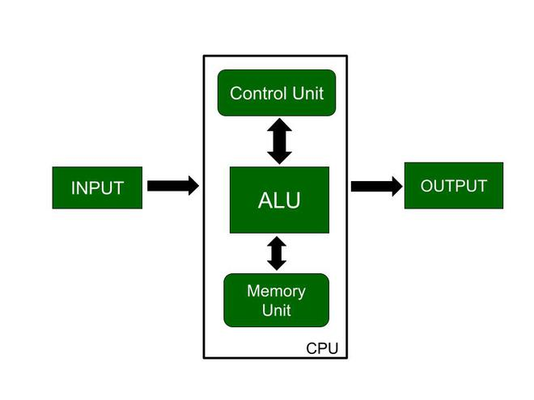
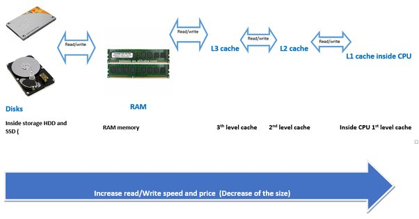
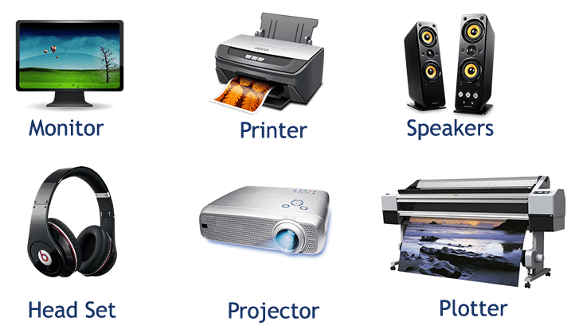
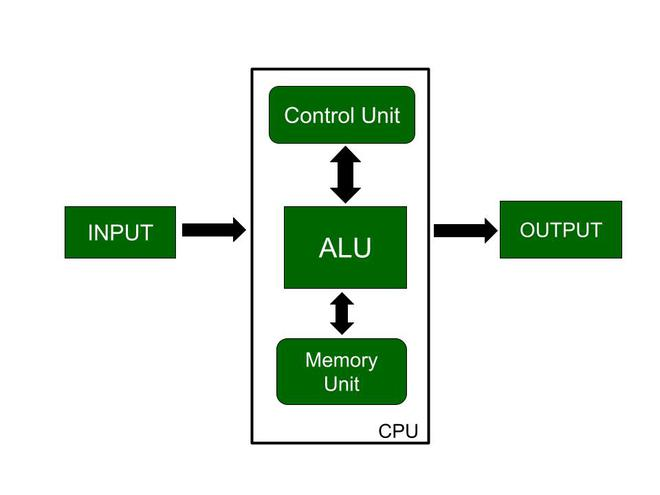
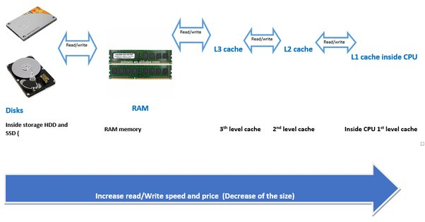
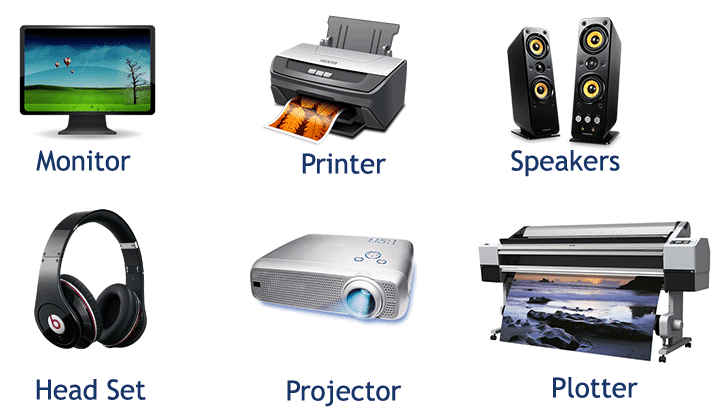

Intoduction to computer
A computer is an electronic device that is capable of performing a wide range of tasks by following a set of instructions called programs. It is a powerful tool that has revolutionized the way we live, work, communicate, and gather information.
Computers have become an integral part of our daily lives, and they can be found in various forms such as desktop computers, laptops, tablets, smartphones, and even embedded in everyday objects like cars and appliances. They are used in diverse fields including education, business, entertainment, healthcare, science, and many others.

The basic components of a computer system include:
Input Devices: These are devices that allow users to input information or commands into the computer. Examples include keyboards, mice, scanners, and microphones.
 Central Processing Unit (CPU): The CPU is the brain of the computer. It performs all the processing tasks and executes instructions. It consists of an arithmetic logic unit (ALU) and a control unit.

Memory: Computers use different types of memory to store and retrieve data. Random Access Memory (RAM) is used for temporary storage of data and instructions that the CPU needs to access quickly. Hard disk drives (HDD) or solid-state drives (SSD) are used for long-term storage.

Output Devices: These devices display or present the processed information to the user. Common output devices include monitors, printers, speakers, and projectors.

Storage Devices: These devices are used for long-term storage of data, programs, and files. Examples include hard disk drives, solid-state drives, optical drives (CD/DVD), and USB flash drives.
Central Processing Unit (CPU): The CPU is the brain of the computer. It performs all the processing tasks and executes instructions. It consists of an arithmetic logic unit (ALU) and a control unit.

Memory: Computers use different types of memory to store and retrieve data. Random Access Memory (RAM) is used for temporary storage of data and instructions that the CPU needs to access quickly. Hard disk drives (HDD) or solid-state drives (SSD) are used for long-term storage.

Output Devices: These devices display or present the processed information to the user. Common output devices include monitors, printers, speakers, and projectors.

Storage Devices: These devices are used for long-term storage of data, programs, and files. Examples include hard disk drives, solid-state drives, optical drives (CD/DVD), and USB flash drives.
 Software: Software refers to the programs, applications, and operating systems that enable the computer to perform specific tasks. Operating systems like Windows, macOS, and Linux manage the computer's hardware and provide a user interface.
Go to gogal
Software: Software refers to the programs, applications, and operating systems that enable the computer to perform specific tasks. Operating systems like Windows, macOS, and Linux manage the computer's hardware and provide a user interface.
Go to gogal